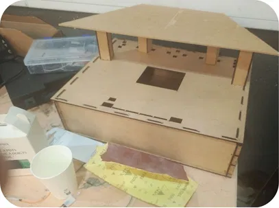
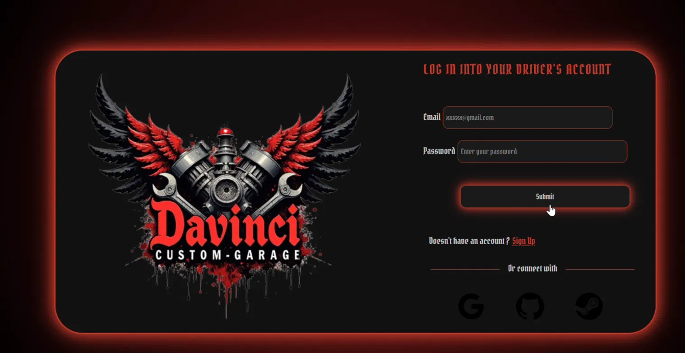

DAVINCI Custom Garage
A connected smart parking system, from the browser to the sensor

Context
Finding a free space in an urban car park wastes time and fuel, and most barriers still rely on tickets that can be lost or copied. The brief was to build a system that knows which spaces are free and lets an authorised driver in without a ticket, as a working physical prototype under a 150 euro hardware budget.
The problem
The difficulty is not building a website, and it is not wiring a sensor. It is keeping two very different worlds telling the same story: a database that believes space three is occupied, and a physical space that actually is. Any drift between them makes the whole system useless.
Architecture
The system runs across three layers.
- User layer: the web interface where a driver checks availability and books a space.
- Application layer: a Symfony application with Doctrine and MySQL, handling users, reservations, QR codes, parking spaces and access history, and exposing a REST API.
- Embedded layer: an Arduino UNO R4 WiFi and an ESP32-CAM driving ultrasonic and infrared sensors, servo motors, status LEDs and an LCD display.
The two ends never talk directly. Everything passes through the REST API over HTTP with JSON payloads, which means either side can be tested on its own.

How a reservation works
- The driver books a space on the web application.
- Symfony generates a unique QR code for that reservation.
- At the entrance, the ESP32-CAM reads the code.
- The API validates it server-side against the reservation.
- If valid, the barrier opens and the access is recorded.
- A sensor detects the vehicle and updates the space status.
- The change propagates back to the database and the interface.
My role
I designed the three-layer architecture and built the software side of it: the Symfony web application, the REST API connecting it to the hardware, the QR-code access control, and the synchronisation between sensor state and database. I also handled the integration between the web platform and the Arduino and ESP32 boards, which is where most of the difficulty turned out to be.
What went wrong
Real-time synchronisation was, and still is, the hardest part of this project. Each link in the chain works: the sensor fires, the board sends, the API receives, the database writes, the page displays. Chained together, they drift.
The reason is that nothing in the chain shares a clock. A sensor reports a state change the moment it happens; an HTTP request takes as long as the network decides; a web page only knows what was true when it was loaded. Between those three timescales, there is always a window in which the display and reality disagree.
What I would do differently: stop treating the web page as something that reads a value, and make the server push changes to it instead, with the embedded layer sending a state rather than an event, so that a lost message cannot leave the system stuck in the wrong state. That is the direction I want to take the next version.
Result
A functional prototype: vehicle detection, space status updates, valid and invalid QR-code handling, automatic barrier opening and closing, and database synchronisation all tested successfully. The parking structure was modelled in SolidWorks before assembly, and the circuits were validated in Wokwi and Tinkercad before any component was bought.
Final hardware cost: 142.74 euros, against a 150 euro limit.
What I took from it
- Distributed state is a design problem, not a coding problem. No amount of careful implementation fixes an architecture that assumes instant agreement between two systems.
- Simulating a circuit before buying it is not extra work. It is the cheapest debugging you will ever do.
- An API is a contract. Once the two teams agreed on the JSON, the web and embedded sides could progress independently.